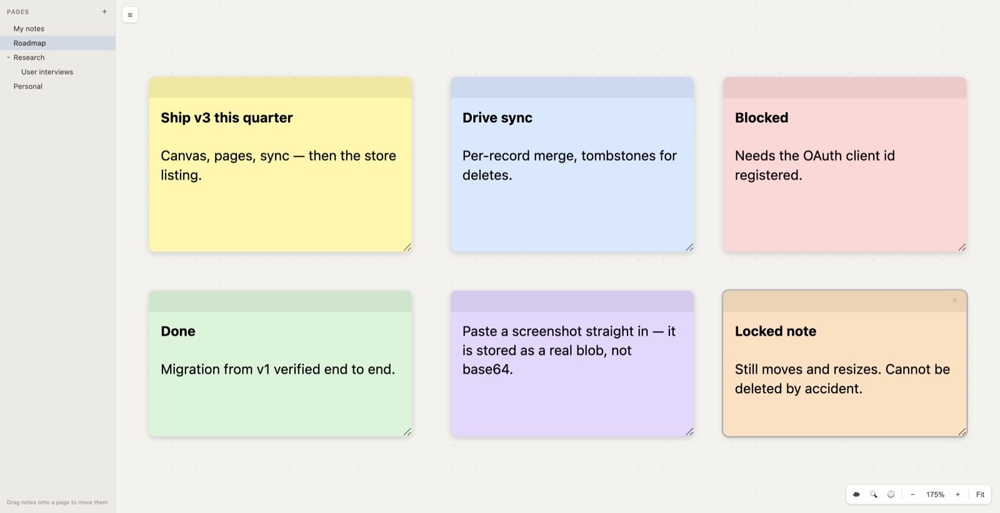
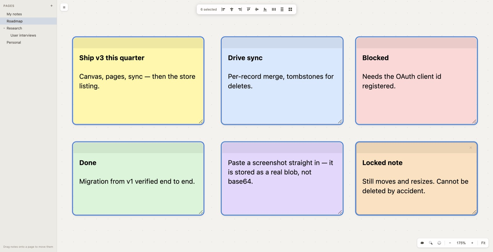
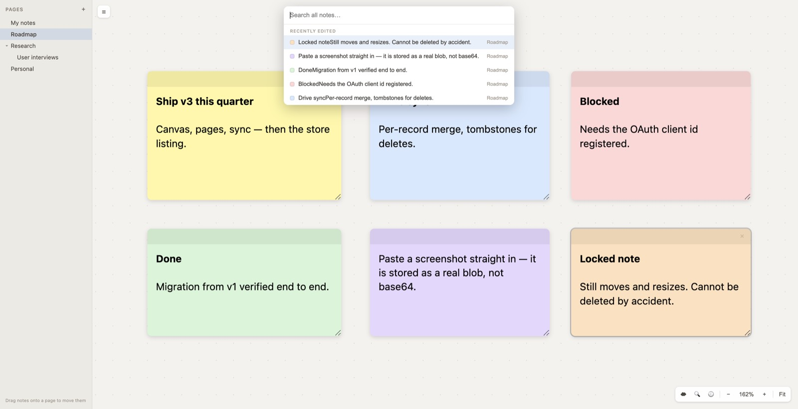

Open a tab, double-click, start typing. Easy Note v3 adds Google Drive sync, an endless canvas, pages to organise everything, and a lock so you can't delete a note by mistake.
Sign in with Google and your notes follow you to every computer you use Chrome on.
The board never runs out. Pan around it, zoom in and out, and fit everything back on screen with one click.
Keep work, shopping and side projects on separate boards — and nest pages inside pages.
Lock the notes you can't afford to lose. They stay where you put them, and they can't be deleted.
Your notes normally stay on the computer you wrote them on. Sign in and they're kept in step across all of them.
Notes go into a private folder that belongs to the extension. It doesn't appear in your Drive, and Easy Note cannot open, read or touch any of your other files. To stop syncing, click Sign out — your notes stay on the computer.
There are no edges. Spread notes out as much as you like — you'll always be able to get back to them.

One endless board is great until work and groceries end up side by side. Pages give each a board of its own.
Pan and zoom are saved per page, so coming back to a board puts you exactly where you left it. Hide the whole sidebar with the ☰ button when you want the full screen.
Wi-Fi passwords, a phone number, the thing you'll need in six months — lock it and a stray click can't take it away.


There's nothing to export and nothing to set up. The first time v3 opens, it brings across every note from the old version — with bold, italics, headings, lists, links and note colours intact.
v3 copies them; it never changes or deletes the originals. If you ever go back to the old version, everything is exactly where you left it.
| Do this | Get that |
|---|---|
| Double-click the board | New note |
| Drag across empty board | Select several notes |
| Space + drag, or scroll | Move around the board |
| ⌘ / Ctrl + scroll, or pinch | Zoom in and out |
| Shift + click a note | Add it to the selection |
| ⌘A · Esc · Delete | Select all · clear · delete |
| Double-click a note's bar | Fullscreen (Esc to close) |
| ⌘F | Search every page |
| Drag a note onto a page | Move it to that page |
| Fit | Bring every note back on screen |
Sync checks for changes every couple of minutes rather than instantly, so give it a moment after editing on another computer — or click Sync now. It's built for one person across several machines, not for editing the same note with someone else at the same time.